CS 230 - Introduction to Computers and Computer Systems |
|
| Instructor: | Rob Hackman |
|---|---|
| Office: | DC2551A |
| Email: | r2hackma@uwaterloo.ca |
| Website: | https://www.student.cs.uwaterloo.ca/~cs230/ |
| Note: | All program codes in this course notes are provided by Prof. Hackman during class. |
Lecture 1 - 04/01/2018
Goals
-
Overview of computer systems
- What is a computer?
- How do they work?
- Why are they designed as such?
- Work from the bottom-up
- Understand the basic challenges and techniques
In this course, we will use Linux.
The student environment is student.cs.uwaterloo.ca.
We will be learning MIPS; we have MIPS assembler and emulator for you to use on the student environments.
Overview
- Arithmetic, Hardware, Data
- Assembly Language
- Machine Internals
- Build and Execute
- Multiprocessing
- Operating System (if time allow)
What is a computer?
Computer is a bunch of logic gates and circuitry; it is designed to complete a task.
Let's think of a old stop watch. It can only has functionality to start timing, stop timing, and maybe hold up to 3 lap times.
Technically this is a computer; this is not what we think of today.
What differentiates it?
If we want to reprogram our stop watch, we must change the circuitry.
The modern day personal computer is re-programmable without having to change the circuitry.
It is called "Von Neumann Architecture".
Von Neumann Architecture
Von Neumann Architecture has the circuitry redefine a set of "instructions" that can be executed by it.
Basic arithmetic done by the arithmetic logic unit (ALU); it has a "control unit" (CU) that runs control instructions.
These two together define our central processing unit (CPU).
Von Neumann Architecture has memory that can be accessed at any location within (random access memory - RAM).
This is called our memory unit (MU).
We can read/write to our memory unit.
Memory unit stores both instructions AND data.
Lastly, we require inputer/output devices.

Von Neumann Architecture is still the basis for almost all computers today.
(Strict Von Neumann Architecture says that data and program must be stored on the same memory unit; this is not always the case Harvard Architecture.)
How does a Von Neumann Machine run a program?
It keeps track of what address in memory and the next instruction to execute is located.
How does our CPU store the address of the next instruction if memory is separate?
Special circuits called "registors" which are parts of the CPU.
They are memory in that they simply store sets of \(1\)'s and \(0\)'s for the CPU to interpret and use.
Registors begin part of the CPU are can be read from/written to very fast.
A special registor called "program counter" or "PC registor" which stores the location of the next instruction.
What types of instructions exist? Lots!
- Data transfer/read/write to memory
- Do some arithmetic
- Branch (change the address stored in the program counter)
There are many different hardwares exist: AMD, Intel, Qualcomm, ...
They have their own instruction sets!
You can write a C program and execute both on a machine with an AMP's CPU and an Intel's CPU.
But how does this work if instruction sets are different?
The instructions are preset for the circuitry.
Instructions are great for circuitry; they're only ones and zeros!
Machine Code or Machine Language is the name for the code of a program written in base instructions. It is not friendly to human.
We can move one step up to Assembly Language.
Assembly instructions have a direct mapping to one or more machine code instructions.
We have a tool called "assembler" that takes assembly language programs and generates a machine program which the hardware can execute.
Moving one step further away from the machine, there are intermediate languages (essentially a tool for compilers).
Lastly, we have high level programming languages: C, C++, Java, ...
C/C++ are compiled programming languages.
We have a program called "compiler" that takes our C program as input and generates an assembly version of that program.
Most compilers also assemble that program immediately to produce a final machine code program (binary file) which your hardware can execute!
Hence, programs are stored in memory; data is also stored in memory.
Memory is just \(1\)'s or \(0\)'s.
So, what does memory actually look like and how do we interpret it?
Number Representation
What does the number \(924\) mean?
- Nine hundred forty two
- Nine hundreds, Four tens, Two ones
- \(9 \times 10^2 + 4 \times 10^1 + 2 \times 10^0\)
This is the radix \(10\) representation of the number \(942\).
Radix is also know as "base".
This continues each digit we add to the left we simply increment the exponent.
This is why our number system is called "base \(10\)" or "decimal".
Radix representation allows us to write natural numbers using a finite alphabet.
In base \(r\), we have \(r\) characters in \(r\) alphabets (digits).
Typically, \(0, 1, 2, \dots, r-2, r-1\).
For any length \(n\) word in base \(r\), we have \(d_{n-1}, d_{n-2}, \dots, d_{2}, d_{1}, d_{0}\).
We can "calculate" or rather compue the decimal value number by doing
\(\displaystyle\sum_{i=0}^{n-1} d_i r^i\)
You can use any number for your base.
- base \(2\): binary [\(0\), \(1\)] (also call bit)
- base \(8\): octal [\(0, 7\)]
- base \(10\): decimal [\(0, 9\)]
- base \(16\): hexadecimal [\(0, 1, \dots , 9, A, B, C, D, E, F\)]
Humans mostly use base \(10\) - why? We have \(10\) fingers!
Computer use base \(2\), binary. Why?
Electrical simplicity: On/Off, High/Low, \(1\)/\(0\)
Example: Consider the number \(1440_{sept}\) or \(1440_{7}\).
\(0 \times 7^{0} + 4 \times 7^{1} + 4 \times 7^{2} + 1 \times 7^{3} = 567_{10}\)
Example: Consider the number \(A32_{Hex}\), a.k.a. \(A32_{16}\).
\(2 \times 16^{0} + 3 \times 16^{1} + A \times 16^{2} = 1050_{10}\)
Same conversion for any base to base 10 (binary included) - just use that summation formula.
But what if we have a decimal number and we want to figure out the binary representation?
We need to use repeated divisions!
- Step 1: divide the number by 2, the remainder is the current digit (starting at digit 0)
- Step 2: take the quotient and repeat until the quotient is 0
Example: Convert \(4242_{10}\) to hexadecimal.
\begin{align*}
4242 / 16 &= \phantom{0}265 \dots 2 & \leftarrow 2 \text{ is the least significant digit}\\
265 / 16 &= \phantom{00}16 \dots 9 & \\
16 / 16 &= \phantom{000}1 \dots 0 & \\
1 / 16 &= \phantom{000}0 \dots 1 & \\
\text{So } 4242_{10} &= 1092_{16}
\end{align*}
Example: Convert \(187_{10}\) to binary.
\begin{align*}
187 / 2 &= 93 \dots 1\\
93 / 2 &= 46 \dots 1\\
46 / 2 &= 23 \dots 0\\
23 / 2 &= 11 \dots 1\\
11 / 2 &= \phantom{0}5 \dots 1\\
5 / 2 &= \phantom{0}2 \dots 1\\
2 / 2 &= \phantom{0}1 \dots 0\\
1 / 2 &= \phantom{0}0 \dots 1\\
\text{So } 187_{10} &= 101\:1101_{2}
\end{align*}
It took a LOT of divisions to get our binary number, and it was only \(187\)!
Luckily, it is trivial to convert between both octal/hexadecimal and binary.
So we can always first convert to hexadecimal, the nto binary.
To convert hexadecimal to binary, simply look at sets of \(4\) bits.
| Binary | Hexadecimal |
|---|---|
| 0000 | 0 |
| 0001 | 1 |
| 0010 | 2 |
| 0011 | 3 |
| 0100 | 4 |
| 0101 | 5 |
| 0110 | 6 |
| 0111 | 7 |
| 1000 | 8 |
| 1010 | A |
| 1011 | B |
| 1100 | C |
| 1101 | D |
| 1110 | E |
| 1111 | F |
So \(1101\:0111_{2} = D7_{16}\)
Lecture 2 - 09/01/2018
Binary Addition
Last time, we had learnt how to convert decimal number to binary number.
But how do we add two binary numbers together?
Binary addition is actually simple textbook addition.
However, we have a problem.
Unlike writing on paper or doing math in our head, our circuit can only have a certain number of bits (for example, \(32\)-bit).
This is what we call fixed-width representation; in fixed-width representation, we have a problem called overflow.
Consider a \(4\)-bit fixed-width representation. \begin{align*} 12_{10} + 7_{10} &= 1100_{2} + 0111_{2}\\ &= 1\:0011_{2} \end{align*}
Our answer has \(5\) bits, but we are working with a \(4\)-bit fixed-width representation!
This is an overflow!
Hence, we have to omit the leftest bit and so, we can get a 4-bit answer.
\begin{align*}
12_{10} + 7_{10} &= 1100_{2} + 0111_{2}\\
&= 0011_{2}\\
&= 3_{10}
\end{align*}
So \(12_{10} + 7_{10} = 7_{10}\) in a \(4\)-bits fixed-width representation.
We can calculate the result directly modulo \(16\) (so the largest number we can represent with \(4\) bits is \(15\).
Binary Subtraction
Now we know that the addition works with binary, but human is lazy - we don't want to design a subtraction circuit!
Subtraction is simply adding a negative number, or adding the negation of the number you are subtracting.
Naive Approach:
If we have n-bit to store our number, use n-1 bits to just store a regular old binary natural number (magnitude) and use the remaining bit to denote the sign.
This is the sign and magnitude approach.
But this approach has two problems!
The first problem is we have two zeros here!
For example, in \(4\)-bit fixed-width representation...
\(1000_{2} = -0_{10}\) where the first bit \(1\) is the sign bit \(-\) and the rest of the bits is the magnitude of \(0_{10}\).
\(0000_{2} = +0_{10}\) where the first bit \(0\) is the sign bit \(+\) and the rest of the bits is the magnitude of \(0_{10}\).
The second problem is addition does not work here!
For example,
\begin{align*}
3_{10} - 1_{10} &= 3_{10} + (-1_{10})\\
&= 0011_{2} + 1001_{2}\\
&= 1100_{2}\\
&= -4_{10}
\end{align*}
Clearly, we know that \(3 - 1 \neq -4\).
Attempt 2: \(1\)'s Complement
To represent negation of a binary number, simply invert(flip) the bits - \(0\)'s become \(1\)'s and \(1\)'s become \(0\)'s.
Addition is possible here; the trick is to add any carry over to the sum.
Example: \(7_{10} - 4_{10}\) in \(4\)-bit fixed-width representation.
We know that \(4_{10} = 0100_{2}\), then flip it and we will get \(1011_{2}\) to represent \(-4\).
\begin{align*}
7_{10} - 4_{10} &= 7_{10} + (-4_{10})\\
&= 0111_{2} + 1011_{2}\\
&= 1\:0010_{2}\\
&= 0010_{2} + 1_{2} \text{ // add the carry over to the sum}\\
&= 0011_{2}\\
&= 3_{10}
\end{align*}
Wait... We still have two zeros here!
\(0000_{2} = +0_{10}\) and \(1111_{2} = -0_{10}\).
Also, this is not our same addition from before; we want to reuse the exact same circuit!
Attempt 3: \(2\)'s Complement
To negate a number, flip the bits, then add \(1\).
This will only give us one zero.
\begin{align*}
+0_{10} &= \phantom{0\:}0000_{2} \text{ // work in 4-bit fixed-width representation}\\
&= \phantom{0\:}1111_{2} \text{ // flip}\\
&= 1\:0000_{2} \text{ // add 1 }\\
&= \phantom{0\:}0000_{2} \text{ // remove the overflow bit}
\end{align*}
Example: \(7 - 4\) in \(4\)-bit fixed-width representation.
We know that \(4_{10} = 0100_{2}\), then flip it to get \(1011_{2}\) and add \(1\) to get \(1100_{2}\) which represents \(-4\).
\begin{align*}
7_{10} - 4_{10} &= 7_{10} + (-4_{10})\\
&= 0111_{2} + 1100_{2}\\
&= 1\:0011_{2}\\
&= 0011_{2} \text{ // remove the overflow bit}\\
&= 3_{10}
\end{align*}
The \(2\)'s complement solves our problems and it works!
This is how all computers today represent negative integers.
Beauty is in the eye of the beholder!
What does \(1011_{2}\) mean?
This could be \(11_{10}\)or \(-5_{10}\), it depends on how we choose to interpret it.
There are other ways to interpret these binary numbers; we will talk about later.
Sign Extension
We were using \(4\)-bit fixed-width representation. If we wanted to move to other fixed-width representation (e.g. \(8\)-bit), fill the extra spaces on the left with 0's for any positive number, or 1's for any negative number.
For example...
| \(4\)-bit | \(8\)-bit | |
|---|---|---|
| \(5_{10}\) | \(0101_{2}\) | \(0000\:0101_{2}\) |
| \(-3_{10}\) | \(1101_{2}\) | \(1111\:1101_{2}\) |
Range
For \(2\)'s complement, the range of \(n\)-bit fixed-width representation is \([-2^{n-1}, 2^{n-1} - 1]\).
For example, the range of \(4\)-bit fixed-width representation is \([-8, 7]\).
Range for unsigned integers is \([0, 2^{n} - 1]\).
Shift Operations
We can shift a bit string right or left.
They are equivalent to division or multiplication by 2.
They are very fast machine instructions.
When right shifting a negative number, fill the "new" left positions with 1's; for positive number, fill with 0's.
For example...
\begin{align*}
\begin{array}{rll}
& \phantom{=}\:1101_{2} \ll 2 && \text{ // shift the bit string } 1101_{2} \text{ left 2 positions}\\
&= 11\:0100_{2} && \text{ // Overflow, omit the 2 leftest bits}\\
&= 0100_{2} && \text{ // final answer}
\end{array}
\end{align*}
\begin{align*}
\begin{array}{rll}
& \phantom{=}\:0001_{2} \ll 2 && \text{ // shift the bit string } 0001_{2} \text{ left 2 positions}\\
&= 00\:0100_{2} && \text{ // Overflow, omit the 2 leftest bits}\\
&= 0100_{2} && \text{ // final answer}
\end{array}
\end{align*}
Binary Multiplication
Binary multiplication is same as textbook multiplication.
For example...
\begin{align*}
\def\doubleunderline#1{\underline{\underline{#1}}}
\begin{array}{rll}
1000_{2}\\
\underline{\times \phantom{0000}1000_{2}}\\
\phantom{0000}1000_{2}\\
\phantom{00}10\:0000_{2}\\
\underline{+ \phantom{0}100\:0000_{2}}\\
\doubleunderline{110\:1000_{2}}
\end{array}
\end{align*}
Binary multiplication is done by the processor as shift and add operators.
It can be easily parallelized.
Binary Division
Again, it is same as textbook division.
For example...
\begin{align*}
\require{enclose}
\def\doubleunderline#1{\underline{\underline{#1}}}
\begin{array}{rll}
1101_{2}\\
1000_{2} \enclose{longdiv}{110\:1010_{2}}\kern-.2ex \\
\underline{100\:0_{2}\phantom{000}}\\
\phantom{0}10\:10_{2}\phantom{00}\\
\underline{\phantom{0}10\:00_{2}\phantom{00}}\\
\phantom{000}1010_{2}\\
\underline{\phantom{000}1000_{2}}\\
\doubleunderline{\phantom{00000}10_{2}}
\end{array}
\end{align*}
Binary division is also done by shift and subtract.
But each result depends on the previous, division cannot be easily to parallelized.
So, the duration of binary multiplication is shorter than the duration of binary division.
Boolean Algebra
How does our computer actually implement binary addition, subtraction, multiplication, division and shifting?
How does it work with all these \(0\)'s and \(1\)'s?
The basis of all our computer's circuits today comes from the work of a mathematician who died in 1864 - George Boole.
Boole's work is what we call Boolean algebra today.
Boolean algebra is a specific branch of algebra dedicated to work with only values true and false.
The basic operators of Boolean algebra are AND, OR, NOT.
In computers, each of these "logic gates" can be created with a few transistors.
OR operator
It is also called "disjunction".
It denotes as \(x \lor y\); it most closely relates to addition\((+)\) in regular algebra, so it can be denoted as \(x+y\).
\(x \lor y\) is true if either \(x\) or \(y\) is true, or both.
| Logic gate OR for logic circuit diagram: | Truth Table (\(0\) is false, \(1\) is true) |
||
|---|---|---|---|
| 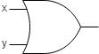 | \(x\) | \(y\) | output |
| \(0\) | \(0\) | \(0\) | |
| \(0\) | \(1\) | \(1\) | |
| \(1\) | \(0\) | \(1\) | |
| \(1\) | \(1\) | \(1\) | |
AND operator
It is also called "conjunction".
It denotes as \(x \land y\); it most closely relates to multiplication(\(*)\) in regular algebra, so it can be denoted as \(x*y\).
AND means both of \(x\) and \(y\) must be true!
| Logic gate AND for logic circuit diagram: | Truth Table (\(0\) is false, \(1\) is true) |
||
|---|---|---|---|
| 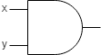 | \(x\) | \(y\) | output |
| \(0\) | \(0\) | \(0\) | |
| \(0\) | \(1\) | \(0\) | |
| \(1\) | \(0\) | \(0\) | |
| \(1\) | \(1\) | \(1\) | |
NOT operator
It is also called "negation".
It denotes as \(\neg x\), \(\tilde{x}\), \(\text{~}x\) or \(!x\).
NOT means the opposite of \(x\).
| Logic gate NOT for logic circuit diagram: | Truth Table (\(0\) is false, \(1\) is true) |
||
|---|---|---|---|
| 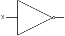 | \(x\) | output | |
| \(0\) | \(1\) | ||
| \(1\) | \(0\) | ||
There also exists more specific gates that can be built from combinations of the above three operators.
But these are so common and helpful, we use them in our Boolean algebra.
XOR operator
It is also called "exclusive or".
It denotes as \(x \oplus y\) or \(x \# y\).
It means "one or the other, but not both."
| Logic gate XOR for logic circuit diagram: | Truth Table (\(0\) is false, \(1\) is true) |
||
|---|---|---|---|
| 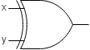 | \(x\) | \(y\) | output |
| \(0\) | \(0\) | \(0\) | |
| \(0\) | \(1\) | \(1\) | |
| \(1\) | \(0\) | \(1\) | |
| \(1\) | \(1\) | \(0\) | |
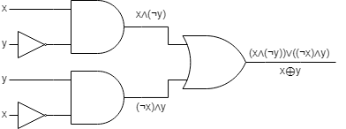
NOR operator
It denotes as \(\neg (x \lor y)\) or \(x \downarrow y\).
It means "neither", aka "NOT OR".
| Logic gate NOR for logic circuit diagram: | Truth Table (\(0\) is false, \(1\) is true) |
||
|---|---|---|---|
| 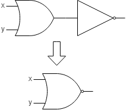 | \(x\) | \(y\) | output |
| \(0\) | \(0\) | \(1\) | |
| \(0\) | \(1\) | \(0\) | |
| \(1\) | \(0\) | \(0\) | |
| \(1\) | \(1\) | \(0\) | |
NAND operator
It denotes as \(\neg(x \land y)\) or \(x \uparrow y\).
It means "not both"; it is simply negation of AND.
| Logic gate NOR for logic circuit diagram: | Truth Table (\(0\) is false, \(1\) is true) |
||
|---|---|---|---|
| 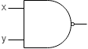 | \(x\) | \(y\) | output |
| \(0\) | \(0\) | \(1\) | |
| \(0\) | \(1\) | \(1\) | |
| \(1\) | \(0\) | \(1\) | |
| \(1\) | \(1\) | \(0\) | |
Since this is Boolean algebra, we can combine these operators to form complex expression and of course, we have rules for how these operators write.
| Identity | Name |
|---|---|
| \(\neg(\neg x) = x\) | Double Negation |
| \(x \land x = x\) | Idempotent Law |
| \(x \lor x = x\) | |
| \(x \land 1 = x\) | Identity Law |
| \(x \lor 0 = x\) | |
| \(x \land 0 = 0\) | Domination Law |
| \(x \lor 1 = 1\) | |
| \(x \land y = y \land x\) | Commutative Law |
| \(x \lor y = y \lor x\) |
Lecture 3 - 11/01/2018
Example: Convert the following binary to decimal.
| Binary | Sign and Magnitude | 1's Complement | 2's Complement |
|---|---|---|---|
| \(0000_2\) | \(+0_{10}\) | \(+0_{10}\) | 0_{10}\) |
| \(0001_2\) | \(+1_{10}\) | \(+1_{10}\) | \(1_{10}\) |
| \(1000_2\) | \(-0_{10}\) | \(-7_{10}\) | \(-8_{10}\) |
| \(1001_2\) | \(-1_{10}\) | \(-6_{10}\) | \(-7_{10}\) |
| \(1011_2\) | \(-3_{10}\) | \(-4_{10}\) | \(-5_{10}\) |
In human mind, to conver binary to decimal under \(2\)'s complement, we can use the following formula: \(-2^{n-1} + \displaystyle\sum_{i=0}^{n-2} 2^i \)
For example: \(1001_{2}\) \begin{align*} 1001_2 &= -2^3 + 0 \times 2^2 + 0 \times 2^1 + 1 \times 2^0\\ &= -8_{10} + 1_{10}\\ &= -7_{10} \end{align*}
Boolean Algebra
| Identity | Name |
|---|---|
| \(\neg (\neg x) = x\) | Law of the Double Complement |
| \(x \land x = x\) | Idempotent Law |
| \(x \lor x = x\) | |
| \(x \land 1 = x\) | Identity Law |
| \(x \lor 0 = x\) | |
| \(x \land 0 = 0\) | Domination Law |
| \(x \lor 1 = 1\) | |
| \(x \land y = y \land x\) | Commutative Law |
| \(x \lor y = y \lor x\) | |
| \(x \lor (y \lor z) = (x \lor y) \lor z\) | Associative Law |
| \(x \land (y \land z) = (x \land y) \land z\) | |
| \(x \lor (y \land z) = (x \lor y) \land (x \lor z)\) | Distributive Law |
| \(x \land (y \lor z) = (x \land y) \lor (x \land z)\) | |
| \(\neg (x \lor y) = (\neg x) \land ( \neg y)\) | DeMorgan's Law |
| \(\neg (x \land y) = (\neg x) \lor (\neg y)\) | |
| \(x \lor (x \land y) = x\) | Absorption Law |
| \(x \land (x \lor y) = x\) | |
| \(x \lor (\neg x) = 1\) | Nonmonotone Law |
| \(x \land (\neg x) = 0\) |
A Boolean expression represents a logic function.
A logic function can be represented also by a logic circuit diagram, or a truth table.
Example: \((x \lor y) \land (\neq x)\)
| Logic gate NOR for logic circuit diagram: | Truth Table (\(0\) is false, \(1\) is true) |
||||
|---|---|---|---|---|---|
| 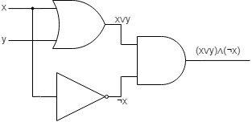 | \(x\) | \(y\) | \(x \lor y\) | \(\neg x\) | \((x \lor y) \land (\neg x)\) |
| \(0\) | \(0\) | \(0\) | \(1\) | \(0\) | |
| \(0\) | \(1\) | \(1\) | \(1\) | \(1\) | |
| \(1\) | \(0\) | \(1\) | \(0\) | \(0\) | |
| \(1\) | \(1\) | \(1\) | \(0\) | \(0\) | |
It is worth mentioning that our variables represent logical statements.
If you are ever confused about how to apply a law over a larger more complex expression, you can say "let \(p = (x \lor y \lor z)\)" and do your manipulations after subbing p into that expression, than resub back the real value to get the final result.
Additionally, while drawing circuits, we can choose to draw an AND, OR, NAND, or NOR gate having an numbers of inputs.
This is easily replicated in redraw.
| \(x \lor y \lor z\) | \( x \land y \land z\) |
|---|---|
| 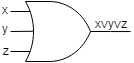 | 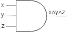 |
Now, we can draw logic gates and we know logic gates can be easily constructed with only a handful of circuit.
So, let's build a circuit to add two bits together.
Example: \(1\)-column of Addition
We want sum (is there \(1\) remaining in this column after addition) and carry (do we need to carry a 1 to the next column).
| \(sum = A \oplus B\) | 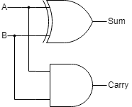 |
| \(carry = A \land B\) |
So all of that for one column of addition.
This circuit is called a Half-Adder.
The half-adder does not take into account the fact a carry bit may have come in from the previous column.
| x | y | Carryin | Carryout | Sum |
|---|---|---|---|---|
| 0 | 0 | 0 | 0 | 0 |
| 0 | 0 | 1 | 0 | 1 |
| 0 | 1 | 0 | 0 | 1 |
| 0 | 1 | 1 | 1 | 0 |
| 1 | 0 | 0 | 0 | 1 |
| 1 | 0 | 1 | 1 | 0 |
| 1 | 1 | 0 | 1 | 0 |
| 1 | 1 | 1 | 1 | 1 |
How about full-adder?
| \(sum = x \oplus y \oplus Carry_{in}\) | 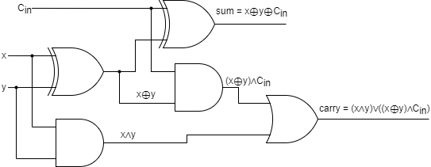 |
| \(carry = (x \land y) \lor ((x \oplus y) \land Carry_{in})\) |
Take away if you can build a truth table or logical expression, you can build a circuit (and all other combos too).
So what about adding numbers with a width larger than 1?
Stick a bunch of full-adders together!
Example: \begin{align*} \frac{ \begin{matrix} & _1 & _1 & _1 & \\ & _{(x_3} & _{x_2} & _{x_1} & _{x_0)} \\ & 0 & 1 & 0 & 1 \\ & _{(y_3} & _{y_2} & _{y_1} & _{y_0)} \\ + & 0 & 0 & 1 & 1 \end{matrix} }{ \begin{matrix} \phantom{=} & 1 & 0 & 0 & 0 \\ & _{(d_3} & _{d_2} & _{d_1} & _{d_0)} \end{matrix} } \end{align*}
But there is a problem: this is kind of slow!
The carry bit needs to propagate from each column to the next.
So, this is linear in number of bits.
Carry-Lookahead Adder
This is faster than full adder.
It is more complex(larger) circuits to determine carry.
Trade-off is complexity and speed (example: power, cost, etc.).
Now, we know how to represent integers and how basis operations work.
But what about other data types?
We know that a bit is the smallest piece of information representable - true or false.
Byte
A byte today is \(8\) bits; it can easily be shown as two hexadecimal digits.
A word is the size of instruction on the given architecture.
The common architectures for now are \(4\) bytes (\(32\) bits) and \(8\) bytes (\(64\) bits).
Words can be ordered in different way.
What is the most significant byte?
This ordering is called Endianness.
Endianness
Big endian which is most significant byte first descending.
Little endian which is least significant byte first asscending.
If we want to represent the number \(0xDEADBEEF\) in one \(4\)-byte word, it looks like this. \begin{align*} \begin{array} \text{Big Endian: } & 0xDE & 0xAD & 0xBE & 0xEF \\ & \uparrow & \uparrow & \uparrow & \uparrow \\ & 0x0010 & 0x0020 & 0x0030 & 0x0040 \\ & \downarrow & \downarrow & \downarrow & \downarrow \\ \text{Little Endian: } & 0xEF & 0xBE & 0xAD & 0xDE \end{array} \end{align*}
Endianness is important!
Think about two computers passing a file.
If one computer stores in big endian but the other stores in little endian, they will not understand the file is the same!
Endianness is important in network area; the standard for networking is big endian.
Okay, so these are bits and bytes.
But how do we store staff?
Character
Character is letter!
There are two famous character encoding standard.
The first one is ASCII (American Standard Code for Information Interchange).
In ASCII, 1 byte means 1 character.
The normal ASCII codes are using \([0, 127]\) and the extended ASCII codes are using \([128, 255]\).
For example, \([0, 31]\) is for special control characters (non-printable), \([48, 57]\) is for number \(0\) to \(9\), \([65, 90]\) is for alphabet \(A\) to \(Z\) and \([97,122]\) is for alphabet \(a\) to \(z\).
But... ASCII does not include other languages!
So we have other standard called UTF-8 (8-bit Unicode Transformation Format).
In UTF-8, we use 1 to 4 bytes to represent per character.
The 1 byte encoding is compatible as ASCII - characters that tend to occur more frequently store in 1 byte.
String
String is just a collection or array of characters.
But how does the computer know the length of a string?
Commonly, a string is terminated with the special character NULL(\0): \(0x00\).
For example, "Hello" in ASCII is \(0x48 \; 0x65 \; 0x6C \; 0x6c \; 0x6F \; 0x00\).
Lecture 4 - 16/01/2018
Real Numbers
What is real number? For example, \(1.15\) is real number.
How does computer represent real numbers?
First of all, let's talk about the Scientific Notation.
For example, \(-3.24 \times 10^{56}\), and it is also called as Normalized Scientific Notation.
Normalized Scientific Notation: one non-zero digit in front of the decimal point
For example, \(0.002 \times 10^{4}\) and \(56.123 \times 10^{8}\) are not normalized.
How do we write a real number in binary with scientific notation?
For example, \(1.01_2 \cdot 2^1\) where the \(.\) after \(1\) and before \(0\) is called a binary point (radix point generally).
So what does \(1.01_2\) mean?
Before we answer this answer, we need to ask ourselves, what does \(1.01_{10}\) mean?
\begin{align*}
1.01_{10} = 1 \cdot 10^0 + 0 \cdot 10^{-1} + 1 \cdot 10^{-2}
\end{align*}
With the same idea, we have...
\begin{align*}
1.01_2 &= 1 \cdot 2^0 + 0 \cdot 2^{-1} + 1 \cdot 2^{-2}\\
&= 1 + \frac{1}{4}\\
&= 1.25_{10}
\end{align*}
How do we represent real numbers in our machines?
We use what's called floating point number.
The reason it is called this name because it allow the binary point to "float" by changing the exponent.
The opposite would be fixed point.
Floating point is of the form \(I.F \cdot B^E\) where...
- \(I\): Integer
- \(F\): Fractional
- \(B\): Base
- \(E\): Exponent
- \(I.F\): Significand (or "Mantissa")
Our floats are always normalized, so \(I\) is always \(1\).
- left out of our representation is called "implicit/hidden point"
The base in always \(2\) because we are in binary!
So these are the components of our floating point.
How does float represent in a machine? the standard IEEE 754.
We have single precision 32 bits, double precision 64 bits.
Single Precision Float: 32 bits

We have 1 bit for the sign bit (green box), 8 bits for the exponent (red boxes) and the rest of the boxes (purple) are for the fractional.
Note that integer and base are not represented since base is 2 and integer is always 1 except for special subnormal numbers.
Also, we need to know that the exponent bits do not represent exactly the exponent \(e\) in \(I.F \cdot B^e\). Why?
The standard uses a bias value, so the exponent bits represent an unsigned number and you subtract the bias from it.
Bias for single precision is \(127\).
So to calculate the value \((-1)^5 \cdot (I.F) \cdot 2^{e-127}\), let's try calculating the decimal value of single precision float:
\begin{align*}
0 \: 10000100 \: 11000000000000000000000
\end{align*}
The first \(0\) is the sign bit.
Then, \(10000100\) are the exponent bits:
\begin{align*}
10000100 &= 128 + 4 - bias\\
&= 132 - 127\\
&= 5
\end{align*}
The rest of the bits \(11000000000000000000000\) are the fractional bits where
\begin{align*}
1.11 &= 1 + 2^{-1} + 2^{-2}\\
&= 1 + 0.5 + 0.25\\
&= 1.75
\end{align*}
So, we now have:
\begin{align*}
(-1)^S \cdot (I.F) \cdot 2^{e-127} &= (-1)^0 \cdot (1.11) \cdot 2^5\\
&= 1 \cdot (1.75) \cdot 2^5\\
&=56.0
\end{align*}
Let's consider a simplified 8-bit representation for floats: 1 bit for sign bit, 3 bits for exponent (bias = 3) and 4 bits for fractional.
Note that bias is a choosing value, so you don't have to worry about it.
Example: Express \(4.5\) in our simplified format.
Note that \(4_{10} = 100_{2}\) and \(0.5_{10} = \frac{1}{2}_{10} = 2^{-1} = 0.1_{2}\).
Thus, \(4.5_{10} = 100.1_{2}\).
Then we have \(100.1\cdot 2^0\) and normalise it, we get \(1.001 \cdot 2^2\).
Next, the exponent is \(e + bias = 2 + 3 = 5 = 101_2\) and sign bit is \(0\) since \(4.5\) is a positive number.
So, we get \(0 \: 101 \: 0010\) as our final answer, where \(0\) is the sign bit, \(101\) is the exponent bits and \(0010\) is the fractional bits.
Arithmetic with floats is easy.
For addition, just set the exponents the same and add the significands (regular addition).
Example: Add \(1.25\) and \(2.125\) in our simplified format.
Note that \(1.25 = 1.01 \cdot 2^0\).
So we know that \(F = 0100\), \(E = 0 + 3 = 3 = 011\) and \(S = 0\).
Thus, \(1.25_{10} = 0 \: 011 \: 0100^{2}\).
Also, \(2.125 = 1.0001 \cdot 2^1\).
So we know that \(F = 0001\), \(E = 1 + 3 = 4 = 100\) and \(S = 0\).
Thus, \(2.125_{10} = 0 \: 100 \: 0001_{2}\).
\begin{align*}
1.25 + 2.125 &= 1.01 \cdot 2^0 + 1.0001 \cdot 2^1 \\
&= 1.01 \cdot 2^0 + 10.001 \cdot 2^0 \\
&= 11.011 \cdot 2^0 \\
&= 1.1011 \cdot 2^1
\end{align*}
From the normalized scientific notation \(1.1011 \cdot 2^{1}\), we know that \(F = 1011\), \(E = 1 + 3 = 4 = 100\) and <\(S = 0\).
So our final answer is \(0 \: 100 \: 1011\).
For multiplication, we add exponents, then multiply significands.
For example, \(1.5 \cdot 2.25\).
Note that \(1.5 = 0 \: 011 \: 100\) and \(2.25 = 0 \: 100 \: 0010\).
Step 1 - Add Exponents:
\((E_{1.5} - bias) + (E_{2.25} - bias) = (011 - 011) + (100 - 011) = 1 = e\)
So \(E = 1 + 3 = 4 = 100_{2}\).
Step 2 - Multiply Significands: \begin{align*} 1.1000 \times 1.0010 &= (1 \cdot 1.001) + (0.1 \cdot 1.001) \\ &= 1.001 + 0.1001 \\ &= 1.1011 \end{align*}
So our new fractional bits are \(1011\), new exponent bits are \(100\) and new sign bit is \(0\).
Therefore, \(1.5 \cdot 2.25 = 0 \: 100 \: 1011\).
However, examining our simplified format we can see the problems that arise in floating point numbers.
The first problem is there exists infinite numbers between 0 and 1, but we cannot represent infinite numbers within 32 bits!
For example, consider \(15.25\) in our 8-bit system:
\(15.25 = 1111.01 \cdot 2^{0} = 1.11101 \cdot 2^{3}\)
We need 5 bits for the fraction but we only have 4 bits to use!
So we get an overflow, which is \(1.1110 \cdot 2^{3}\).
If we round up, we get \(15.5\); if we round down, we get \(15.0\).
So overflow can happen; they get represented as inf (also occurs for divide by 0).
For IEEE 754,
| Exponent Bits | Fractional Bits | Value/Type |
|---|---|---|
| 0000 0000 | 00...00 | 0 |
| 0000 0000 | non-zero | subnormal |
| 0000 0000 1...1111 1110 | Any | normal number |
| 1111 1111 | 00...00 | infinity |
| 1111 1111 | non-zero | NaN |
What is NaN? It means "not a number".
For example, \(\sqrt{-1}\), \(\frac{\infty}{\infty}\) and \(\infty \cdot 0\).
If we didn't create a special case for subnormal numbers, then the gap between \(0\) and our smallest representable number would be:
\begin{align*}
0 \: 000 \: 0000_2 &= 1.0000 \cdot 2^{-3}\\
&= 0.1255
\end{align*}
That is a large gap! Often we talk about small numbers.
This also means our gap between adjacent numbers is \(0.0001 \cdot 2^{-3} = 2^{-7}\).
Instead, we treat subnormal numbers as a special case.
So, when we would have \((0 - bias)\) exponent instead we do \((1 - bias)\) as exponent and have the implicit bit be \(0\).
This is how to interpret subnormal numbers: \((-1)^{S} \cdot (0.F) \cdot 2^{1 - bias}\)
- Smallest number \(>0\) is \(1.00 \cdot 2^{-2}\)
- Gap between number is \(0.0001 \cdot 2^{-2}\) (worse)
- Smallest subnormal number is \(0.0001 \cdot 2^{-2} = 0.01525\) (much better!)
So using subnormal numbers we get a larger gap between our numbers (largest/smallest possible exponent).
But we get closer to 0 before losing all our precision.
Tradeoff is the gaps between representable numbers and how close to 0 we can get.
Gradual Underflow
Don't forget floating point is not exact, it is only an approximation of real numbers.
For example, \(0.1\) cannot be represented in IEEE 754.
Therefore, don't use == on floats.
Also, associativity and distribution or arithmetic operators are not guaranteed!
Module 2 - Assembly Language
Recall: Computers only understand set instructions which are group of \(1\)'s and \(0\)'s (machine code).
A assembly language is one step up from that - basis operations that operate on registers.
It has a direct translation to machine code.
A program called an assembler translates assembly to machine code.
In order to understand how computers/programs work, we are going to study MIPS on assembly language.
Because assembly languages operate on registers (actual hardware of CPU), assembly languages are tied to hardware.
Hence why we use an emulator.
MIPS is an acronym for Microprocessor without Interlocked Pipeline Stages; we will talk about the meaning later (someday in the future).
In MUPS, we have 32 registers (which are labeled with $0 to $31).
Each register is 32 bits.
Why we only have 32 registers, not more? More means slower - we need more bits to store a register.
For now, we only need 5 bits to store 32 registers.
Special Registers
PC (program counter) holds the memory address of the next instruction; each instruction done increments it by 4, or it can be manipulator.
Register 0 ($0): It is the constant \(0\); otherwise, the machine will die!
Conventions
$31 is the return address and $30, $29 and $28 are special.
| ↑ Go to Index | → Go to Module 2 - Assembly Language |
Find a typo or mistake? Feel free to contact me and I will correct it as soon as possible.
Thanks For Coming Here. - Calvin Li
 This work by Chun Kit (Calvin) Li is licensed under a Creative Commons Attribution-NonCommercial 4.0 International License. Chun Kit (Calvin) Li © 2017 - 2018
This work by Chun Kit (Calvin) Li is licensed under a Creative Commons Attribution-NonCommercial 4.0 International License. Chun Kit (Calvin) Li © 2017 - 2018